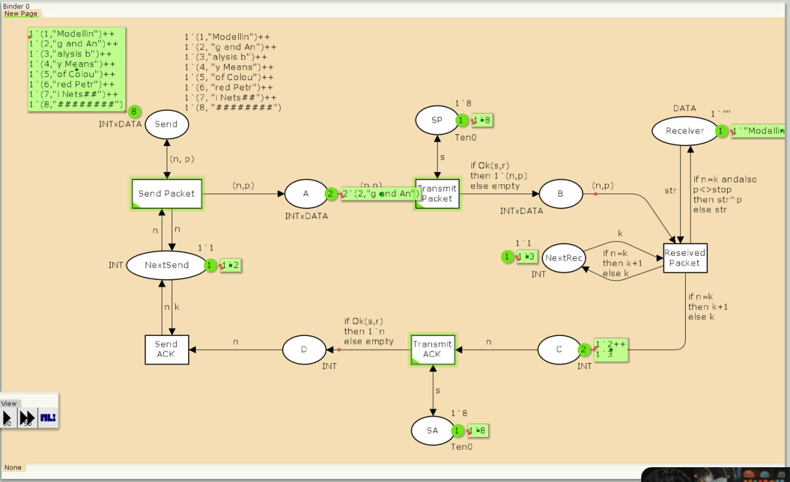
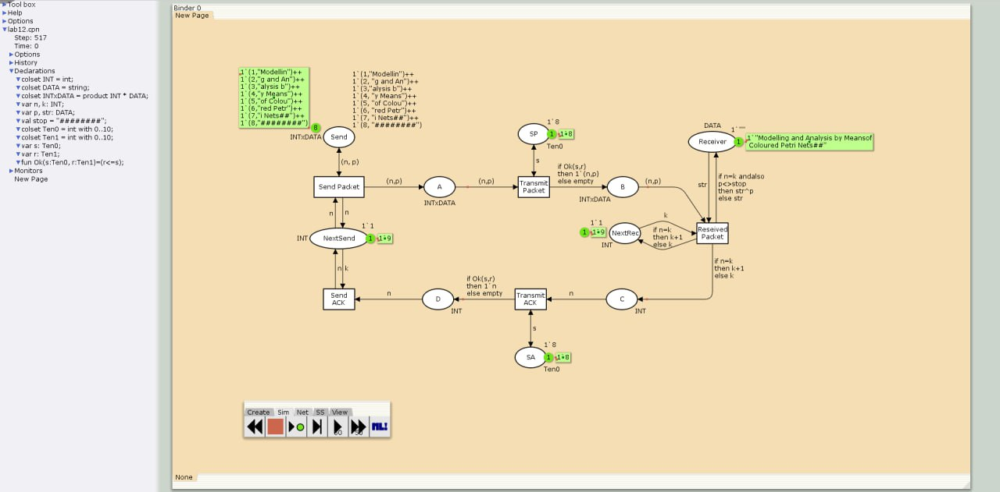
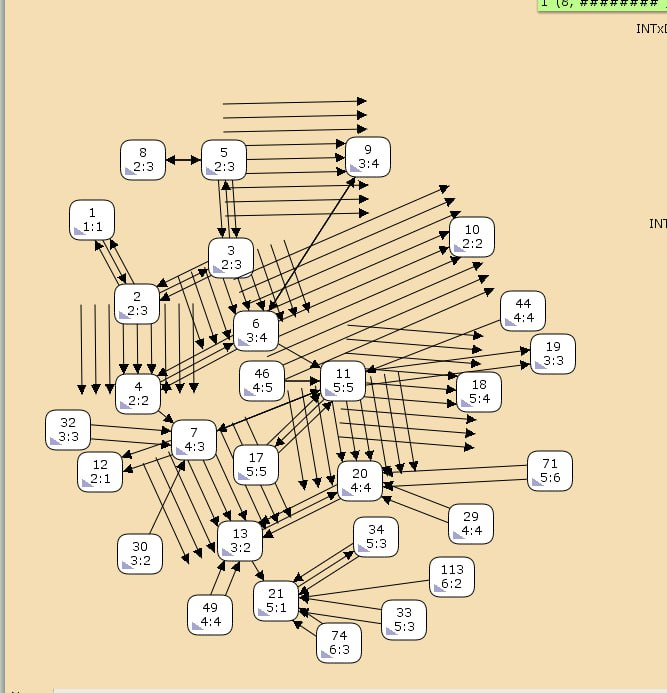
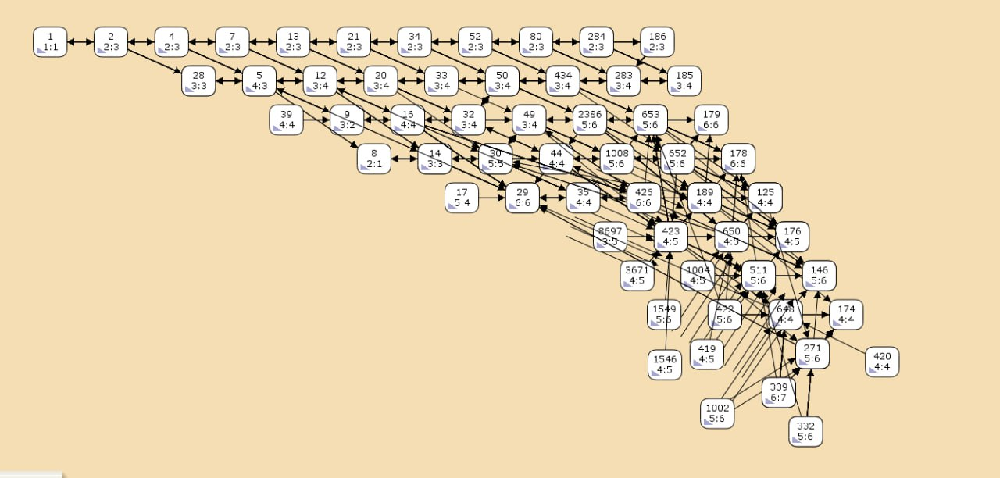
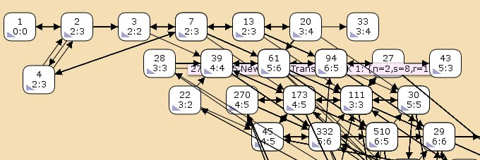

Реализовать простой протокол передачи данных в CPN Tools.
CPN Tools — специальное программное средство, предназначенное для моделирования иерархических временных раскрашенных сетей Петри. Такие сети эквивалентны машине Тьюринга и составляют универсальную алгоритмическую систему, позволяющую описать произвольный объект. CPN Tools позволяет визуализировать модель с помощью графа сети Петри и применить язык программирования CPN ML (Colored Petri Net Markup Language) для формализованного описания модели.
Назначение CPN Tools:
Основные функции CPN Tools:
[@first; @second].
Основные состояния: источник (Send), получатель (Receiver). Действия (переходы): отправить пакет (Send Packet), отправить подтверждение (Send ACK). Промежуточное состояние: следующий посылаемый пакет (NextSend). Зададим декларации модели (рис. @fig:001).
Состояние Send имеет тип INTxDATA и следующую начальную маркировку (в соответствии с передаваемой фразой).
Стоповый байт (“########”) определяет, что сообщение закончилось. Состояние Receiver имеет тип DATA и начальное значение 1’“” (т.е. пустая строка, поскольку состояние собирает данные и номер пакета его не интересует). Состояние NextSend имеет тип INT и начальное значение 1’1. Поскольку пакеты представляют собой кортеж, состоящий из номера пакета и строки, то выражение у двусторонней дуги будет иметь значение (n,p). Кроме того, необходимо взаимодействовать с состоянием, которое будет сообщать номер следующего посылаемого пакета данных. Поэтому переход Send Packet соединяем с состоянием NextSend двумя дугами с выражениями n (рис. 12.1). Также необходимо получать информацию с подтверждениями о получении данных. От перехода Send Packet к состоянию NextSend дуга с выражением n, обратно – k.
Построим начальный граф(рис. @fig:002):
Зададим промежуточные состояния (A, B с типом INTxDATA, C, D с типом INTxDATA) для переходов (рис. 12.2): передать пакет Transmit Packet (передаём (n,p)), передать подтверждение Transmit ACK (передаём целое число k). Добавляем переход получения пакета (Receive Packet). От состояния Receiver идёт дуга к переходу Receive Packet со значением той строки (str), которая находится в состоянии Receiver. Обратно: проверяем, что номер пакета новый и строка не равна стоп-биту. Если это так, то строку добавляем к полученным данным. Кроме того, необходимо знать, каким будет номер следующего пакета. Для этого добавляем состояние NextRec с типом INT и начальным значением 1’1 (один пакет), связываем его дугами с переходом Receive Packet. Причём к переходу идёт дуга с выражением k, от перехода — if n=k then k+1 else k.
Связываем состояния B и C с переходом Receive Packet. От состояния B к переходу Receive Packet — выражение (n,p), от перехода Receive Packet к состоянию C — выражение if n=k then k+1 else k. От перехода Receive Packet к состоянию Receiver: if n=k andalso p<>stop then str^p else str. (если n=k и мы не получили стоп-байт, то направляем в состояние строку и к ней прикрепляем p, в противном случае посылаем только строку).
На переходах Transmit Packet и Transmit ACK зададим потерю пакетов. Для этого на интервале от 0 до 10 зададим пороговое значение и, если передаваемое значение превысит этот порог, то считаем, что произошла потеря пакета, если нет, то передаём пакет дальше. Для этого задаём вспомогательные состояния SP и SA с типом Ten0 и начальным значением 1`8, соединяем с соответствующими переходами(рис. @fig:003):
В декларациях задаём (рис. @fig:004):
Таким образом, получим модель простого протокола передачи данных (рис. 12.3). Пакет последовательно проходит: состояние Send, переход Send Packet, состояние A, с некоторой вероятностью переход Transmit Packet, состояние B, попадает на переход Receive Packet, где проверяется номер пакета и если нет совпадения, то пакет направляется в состояние Received, а номер пакета передаётся последовательно в состояние C, с некоторой вероятностью в переход Transmit ACK, далее в состояние D, переход Receive ACK, состояние NextSend (увеличивая на 1 номер следующего пакета), переход Send Packet. Так продолжается до тех пор, пока не будут переданы все части сообщения. Последней будет передана стоп-последовательность(рис. @fig:005):
Запустим модель и получим следующий результат (рис. @fig:006, @fig:007):
 
Вычислим пространство состояний. Прежде, чем пространство состояний может быть вычислено и проанализировано, необходимо сформировать код пространства состояний. Этот код создается, когда используется инструмент “Войти в пространство состояний”. Вход в пространство состояний занимает некоторое время.
Сформируем отчёт о пространстве состояний и проанализируем его. Чтобы сохранить отчет, необходимо применить инструмент Сохранить отчет о пространстве состояний к листу, содержащему страницу сети и ввести имя файла отчета.
Из него можно увидеть:
CPN Tools state space report for:
/home/openmodelica/Desktop/lab12.cpn
Report generated: Fri Apr 18 22:44:16 2025
Statistics
------------------------------------------------------------------------
State Space
Nodes: 26881
Arcs: 442501
Secs: 300
Status: Partial
Scc Graph
Nodes: 14135
Arcs: 371353
Secs: 15
Boundedness Properties
------------------------------------------------------------------------
Best Integer Bounds
Upper Lower
New_Page'A 1 21 0
New_Page'B 1 10 0
New_Page'C 1 7 0
New_Page'D 1 5 0
New_Page'NextRec 1 1 1
New_Page'NextSend 1 1 1
New_Page'Receiver 1 1 1
New_Page'SA 1 1 1
New_Page'SP 1 1 1
New_Page'Send 1 8 8
Best Upper Multi-set Bounds
New_Page'A 1 21`(1,"Modellin")++
17`(2,"g and An")++
12`(3,"alysis b")++
7`(4,"y Means")++
2`(5,"of Colou")
New_Page'B 1 10`(1,"Modellin")++
8`(2,"g and An")++
6`(3,"alysis b")++
3`(4,"y Means")++
1`(5,"of Colou")
New_Page'C 1 7`2++
5`3++
4`4++
2`5
New_Page'D 1 5`2++
4`3++
3`4++
1`5
New_Page'NextRec 1 1`1++
1`2++
1`3++
1`4++
1`5
New_Page'NextSend 1 1`1++
1`2++
1`3++
1`4++
1`5
New_Page'Receiver 1 1`""++
1`"Modellin"++
1`"Modelling and An"++
1`"Modelling and Analysis b"++
1`"Modelling and Analysis by Means"
New_Page'SA 1 1`8
New_Page'SP 1 1`8
New_Page'Send 1 1`(1,"Modellin")++
1`(2,"g and An")++
1`(3,"alysis b")++
1`(4,"y Means")++
1`(5,"of Colou")++
1`(6,"red Petr")++
1`(7,"i Nets##")++
1`(8,"########")
Best Lower Multi-set Bounds
New_Page'A 1 empty
New_Page'B 1 empty
New_Page'C 1 empty
New_Page'D 1 empty
New_Page'NextRec 1 empty
New_Page'NextSend 1 empty
New_Page'Receiver 1 empty
New_Page'SA 1 1`8
New_Page'SP 1 1`8
New_Page'Send 1 1`(1,"Modellin")++
1`(2,"g and An")++
1`(3,"alysis b")++
1`(4,"y Means")++
1`(5,"of Colou")++
1`(6,"red Petr")++
1`(7,"i Nets##")++
1`(8,"########")
Home Properties
------------------------------------------------------------------------
Home Markings
None
Liveness Properties
------------------------------------------------------------------------
Dead Markings
9476 [26881,26880,26879,26878,26877,...]
Dead Transition Instances
None
Live Transition Instances
None
Fairness Properties
------------------------------------------------------------------------
New_Page'Reseived_Packet 1
No Fairness
New_Page'Send_ACK 1 No Fairness
New_Page'Send_Packet 1 Impartial
New_Page'Transmit_ACK 1
No Fairness
New_Page'Transmit_Packet 1
Impartial
Пространство состояний для модели простого протокола передачи данных
  
В ходе выполнения данной лабораторной работы я реализовала простой протокол передачи данных в CPN Tools.